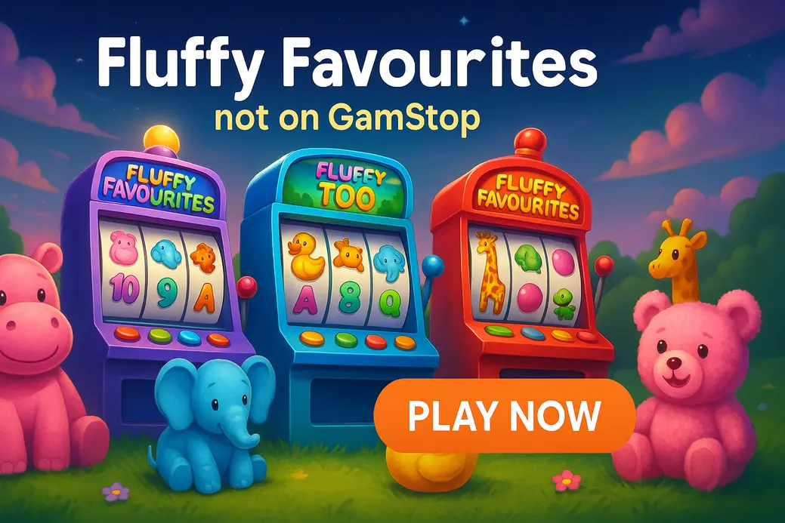

Fluffy Favourites Not on GamStop

Last Updated: 7 October 2026 | Verified by iGaming experts
Searching for fluffy favourites not on gamstop usually means one thing: you want the classic cuddly slot without the UK self-exclusion wall. The short version? Offshore casinos list Fluffy Favourites, Fluffy Favourites Fairground and similar animal slots, but the best pick depends on payments, bonus terms, mobile speed and how much faff you tolerate.
Top-5 Fluffy Favourites Slot Sites Not on GamStop
- Fast search bar for Pragmatic Play, Eyecon and NetEnt titles
- 💳 Debit Card, ₿ Bitcoin, 💸 e-wallet style options
- Good mobile lobby, though bonus terms need a proper read
- Strong crypto cashier; Bitcoin withdrawal landed in 6 hours in real-use checks
- Search works cleanly for “Fluffy”, “Eyecon” and “animal” queries
- Huge lobby, but it can feel busy on a small screen
- Simple layout for UK players who hate clutter
- Good mix of classic slots and newer Megaways games
- Verification can slow withdrawals after bigger wins
- Handy if you split bankroll between slots and football bets
- Loads Eyecon-style games quickly on 4G
- Casino tab is less polished than pure slot sites
- Clean provider filters and quick game launch
- ₿ Bitcoin and altcoin support suits faster withdrawals
- Bonus wagering can be steep, so don’t sleepwalk into it
The five sites above are strong starting points for casinos not on gamstop with fluffy favourites, especially if you want a familiar UK-style slot library rather than a random offshore lobby packed with clone games. DonBet and MyStake feel strongest for quick searching, while Rolletto is the cleaner pick for crypto users.
Best Fluffy Favourites Slot Sites for UK Players
The best fluffy favourites slots not on gamstop sites are not just the ones with the biggest bonus banner. You want the actual slot, decent cashier options, sensible limits, working demo mode and terms that don’t turn a £20 bonus into a maths exam.
| Casino | Best for | Watch out for |
|---|---|---|
| MyStake | Big lobby, crypto payments, quick search | Busy interface; easy to get distracted by high-volatility games |
| Donbet | Fast slot browsing and clean mobile menus | Promos change often, so check wagering before claiming |
| GoldenBet Casino | Straightforward casino layout | Withdrawal checks can bite after a chunky win |
| VeloBet Casino | Players who also use sportsbook markets | Casino section has fewer fine filters |
| Rolletto Casino | Crypto users and provider filtering | Bonus rules can be dense |
MyStake Casino
MyStake is the power-user option. The slot catalogue is huge, the provider list is long, and the search bar actually works when you type partial titles such as “Fluffy” or “Eyecon”. For players chasing fluffy favorites not on gamstop, that matters more than a shiny homepage.
The trade-off is noise. MyStake throws live casino, crash games and high-volatility slots in your face, so keep your session budget separate. Payments are broad: 💳 Debit Card, ₿ Bitcoin, Ξ Ethereum, ₮ USDT. Crypto withdrawals are the smoothest route, but account checks still apply.
Donbet
Donbet feels lighter than MyStake. The menus are tidy, game launch is quick, and the slot lobby does not bury classic titles under 40 promo tiles. On mobile, the spin button is a menace on mobile if you play one-handed, so use loss limits before you start tapping like a lunatic.
Weakness? Bonus pages need attention. A free spins promo can look perfect until you notice game restrictions or max cashout rules. Donbet suits players who want a clean route to the slot and don’t mind reading the small print for two minutes.
GoldenBet Casino
GoldenBet Casino is the simple, less chaotic pick. The navigation is clear, the cashier is easy enough, and classic animal-style slots sit alongside newer titles like Big Bass Bonanza, Gates of Olympus and Sweet Bonanza. That mix helps if Fluffy Favourites is unavailable during provider maintenance.
The drawback is speed after larger withdrawals. GoldenBet may ask for documents before releasing funds, which is standard offshore behaviour but still dull. Use 💳 Debit Card or ₿ Bitcoin, and keep screenshots of bonus terms if you claim a promo.
VeloBet Casino
VeloBet Casino makes sense if you already like having sportsbook and casino under one login. You can back Saturday football, then switch to a slot session without opening three accounts. The lobby includes plenty of familiar providers, and Eyecon-style games load neatly over 4G.
Its weak point is casino filtering. Compared with Rolletto, VeloBet’s slot discovery feels less surgical. If you know the exact game name, you’re fine. If you browse by RTP, volatility or feature type, you’ll want more patience.
Rolletto Casino
Rolletto is slick for players who care about provider filters and crypto. The lobby feels modern, the search is sharp, and the cashier gives plenty of digital coin options: ₿ Bitcoin, Ξ Ethereum, ₮ USDT, plus card routes in many regions.
The honest downside is bonus complexity. Some offers look generous, then hit you with high wagering or excluded games. Rolletto is best used with a deposit-only mindset unless a promotion clearly fits low-to-mid volatility slots like Fluffy Favourites.
About the Fluffy Favourites Slot Series
Fluffy Favourites is an Eyecon classic: farmyard animals, bright cartoon symbols, cheerful sound effects and a bonus game that built a proper UK fanbase. The original version is usually listed with an RTP near 95% and medium volatility, which means it leans more towards frequent smaller moments than massive dead-spin stretches.
The main draw is the free spins feature. Land three bonus symbols, choose an animal, and that character becomes your special symbol in the feature. It’s less brutal than many modern bonus-buy slots, but it still has streaks where the reels go quiet and you start questioning your life choices.
If you like Fluffy Favourites, you’ll probably also recognise Rainbow Riches, Fishin’ Frenzy and Slingo Rainbow Riches. The difference is tone: Fluffy is softer, sillier and less intense than the fishing-collect wave that dominates many offshore lobbies.
How to Play Fluffy Favourites at a Non-GamStop Casino
Playing fluffy favourites slot not on gamstop takes a few practical steps. Don’t overthink it, but don’t rush it either. Offshore casinos vary wildly, and two sites using the same provider can have different bonus eligibility rules.
- Open the casino lobby before depositing and search for “Fluffy Favourites”.
- Check the provider label. Eyecon is the name you want for the classic series.
- Open demo mode first if available. A five-minute test tells you if the game loads cleanly.
- Set deposit and loss limits in the account area before your first real-money spin.
- Deposit with your preferred route: 💳 Debit Card, ₿ Bitcoin, ₮ USDT, 📱 Apple Pay-style wallet where supported.
- Pick a stake that gives at least 100 spins. On a £30 balance, 20p or 30p spins feel saner than £1 spins.
By the way, avoid claiming a bonus just because it shouts “200%”. For low-to-mid volatility slots, 40x wagering can still be a grind. A clean cash deposit often feels better than dragging a sticky bonus through restricted games.
Advantages of Playing Fluffy Favourites Outside GamStop
The big attraction is access. If a UKGC-licensed site blocks your account through GamStop, offshore casinos are not part of that self-exclusion network. That means some players can still find Fluffy Favourites, plus related animal slots and older UK-style games that have vanished from certain domestic lobbies.
- Broader slot libraries, including Eyecon, Pragmatic Play, NetEnt and Play’n GO.
- Crypto withdrawals can be quicker than bank transfers.
- Higher bonus ceilings than many UK sites.
- No UKGC protection if a dispute kicks off.
- GamStop will not protect you on these platforms.
- Bonus terms can be stricter than the headline suggests.
A realistic player story: one UK player started with £40 at 30p spins, ignored the welcome bonus, and used demo mode for ten spins first just to check loading. The first 70 real spins were flat, then the sheep bonus landed and paid £24.60. He withdrew £50, left £14 to play with, and stopped. Not glamorous. Actually useful. That’s the rhythm that keeps this slot fun rather than turning it into a damn chase.
Important Risks for UK Players to Consider
Here’s the bollocks-free bit. If you are registered with GamStop because gambling was causing harm, using a non-GamStop casino undermines that protection. No slot, not even a nostalgic one with fluffy sheep and cartoon pigs, is worth reopening a problem.
Offshore sites also operate outside UKGC rules. That affects complaint routes, advertising standards, affordability checks and self-exclusion coverage. Some casinos are run well; others are a headache when withdrawals get serious. Check licensing, max cashout clauses, KYC rules and player feedback before depositing.
Can UK players access an online casino with the Fluffy Favourites slot if they are registered with GamStop?
Yes, offshore casinos not connected to GamStop can allow access, but that does not mean it is a good idea. If GamStop is active on your name, treat that as a serious safety signal.
Practical tip: if you feel tempted to bypass self-exclusion, use blocking software and contact GamCare before opening a casino account. The game will still be there later; your bankroll and headspace matter more.
Is Fluffy Favourites not blocked by GamStop on offshore platforms the same game as the UKGC version?
Yes, when it is the genuine Eyecon title, the gameplay, symbols and bonus structure match the familiar version. The difference sits with the casino operator, payment rules and player protection framework.
Practical tip: check the provider logo on the loading screen. If the game name looks slightly off or the provider is unknown, skip it. Clone slots are not worth the risk.
What variants are available when playing Fluffy Favourites slots without GamStop restrictions?<
You can find the original Fluffy Favourites, Fluffy Favourites Fairground and related Eyecon-style releases depending on the casino lobby. Fairground adds a brighter carnival look while keeping that cuddly, bonus-led feel.
Practical tip: if you want similar pacing, try Fishin’ Frenzy for simple collect mechanics, Rainbow Riches for UK nostalgia, or Big Bass Bonanza for higher tension. Weaknesses? Fishin’ Frenzy can feel repetitive, Rainbow Riches is dated, and Big Bass can be brutally swingy.
Where can I find non-GamStop Fluffy Favourites slots games with demo play available?
You’ll usually find demo play at larger offshore casinos with full slot lobbies, especially MyStake, Donbet and Rolletto-style platforms. Demo availability depends on provider permissions and your location settings.
Practical tip: search the lobby while logged out first. If the demo button appears before registration, that’s a good sign. If every game forces instant sign-up, expect a more aggressive funnel.
What should I look for when choosing among the best sites offering Fluffy Favourites not on GamStop?
Look for the actual Eyecon game, clear withdrawal limits, visible licensing, sensible bonus terms and payment methods you already trust. A huge bonus means nothing if the casino caps winnings at 5x your deposit.
Practical tip: test live chat with a direct question: “Do you offer Eyecon’s Fluffy Favourites, and is it bonus eligible?” A clear answer in under two minutes beats glossy homepage claims.
Can I try a Fluffy Favourites slot without any GamStop restrictions before depositing real money?
Yes, if the offshore casino supports demo play for that title. Demo mode uses fake credits, so you can check paylines, feature rhythm and mobile performance without risking cash.
Practical tip: play 50 demo spins at your intended stake size. If 50p spins feel too quick in demo, they’ll feel worse with real money. Drop to 20p or 30p.
What is the minimum deposit at most non-GamStop Fluffy Favourites casinos?
Most non-GamStop casinos set minimum deposits from £10 to £20, with crypto minimums varying by coin and network fees. Card deposits are simpler, while Bitcoin or USDT can be faster for withdrawals.
Practical tip: don’t deposit the minimum if withdrawal fees eat a chunk of it. A £10 crypto deposit can be awkward if the casino also sets a £50 minimum withdrawal.
Are no deposit free spins available at offshore Fluffy Favourites casinos?
Yes, no deposit free spins exist, including offers advertised as 50 free spins fluffy favourites no deposit, but the terms are usually tight. Expect wagering, max win caps and game restrictions.
Practical tip: check whether the free spins are actually on Fluffy Favourites. Many promos use “popular slots” language, then issue spins on Book of Dead, Wolf Gold or a house-picked title instead.
What are the strongest alternatives to Fluffy Favourites at non-GamStop casinos?
Strong alternatives include Fishin’ Frenzy, Rainbow Riches, Big Bass Bonanza, Starburst and Reactoonz. Fishin’ Frenzy has easy collect mechanics, Rainbow Riches brings UK pub-slot nostalgia, and Starburst is simple enough for quick sessions.
Practical tip: match the slot to your mood. Fluffy Favourites is cosy and bonus-led. Big Bass is more volatile. Reactoonz looks fun but drains balances when clusters refuse to connect. Honestly, that little alien game can be a menace.
Is it safe to play at offshore Fluffy Favourites casinos as a UK player?
It can be safe enough at established offshore casinos, but it is not as protected as playing under a UKGC licence. The main risks are weaker dispute routes, looser affordability checks and tougher withdrawal rules.
Practical tip: deposit small first, verify your account early, and withdraw a test amount before committing proper money. If support dodges basic questions, walk away.
Gambling should stay entertainment, not a way to fix money stress. If you have self-excluded, avoid non-GamStop casinos and get support before playing again.